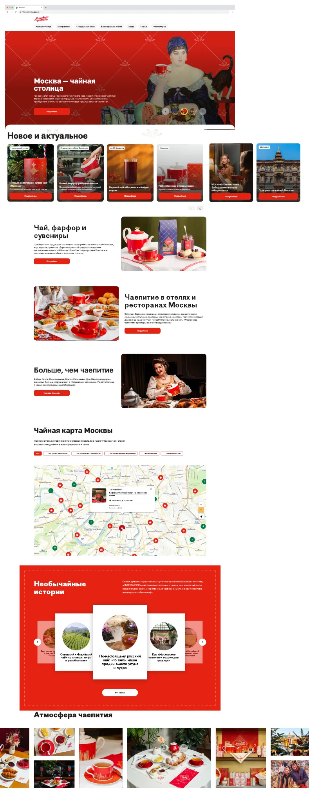
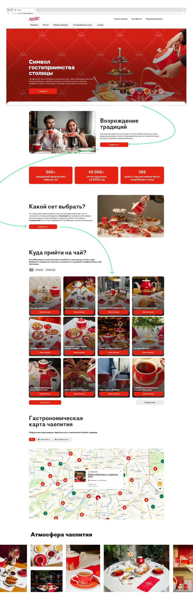
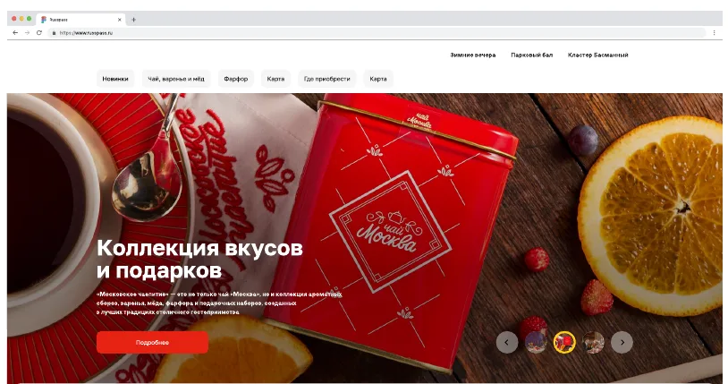

«Московское чаепитие» — городской проект с собственным чаем «Москва», фарфором и чайными сетами в 300+ ресторанах и отелях. Я пересобрал структуру сайта и отвечал за креативы, тексты, флоу и CJM всех страниц. Сайт до сих пор работает по моим макетам.
Пересобрал структуру сайта и навигацию: сайт до сих пор работает по моим макетам.



Хотите обсудить роль?
Написать в Telegram